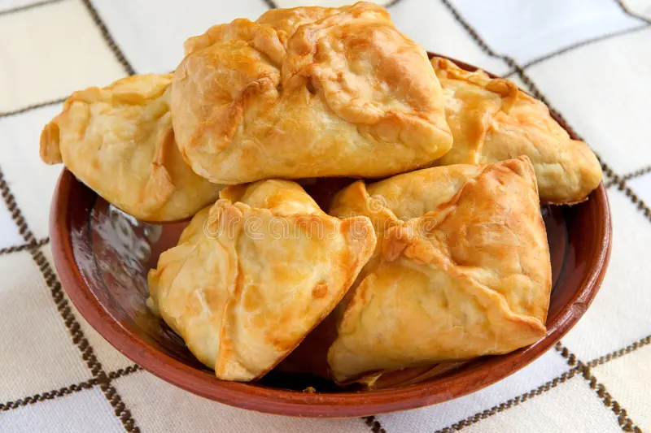

Pirozhki s katroshechkoj

Description:
A new modern perspective on classic russian recipe: pirozhki!
This time easy to prepare, delicious and not forgettable! Every babushka would be proud!
Ingredients:
- Layered, alredy prepared dough
- Spices of your choice
- Potatoes
- Egg
- Quark
- Butter
Steps:
- Cut and boil potatoes until they are ready
- Smash potatoes with a fork, the consistency should not be too smooth
- Melt butter on the small pan, add the spices
- Combine the spices and melt butter together with the smashed potatoes and quark
- Cut the dough on similar pieces, aproximately 12x12 cm
- Put a couple of spoons of the potatoes inside the dough square and put the ends of the square together
- Brush the egg on top of ready pirozhki
- Bake with 180°C for 40-50 min